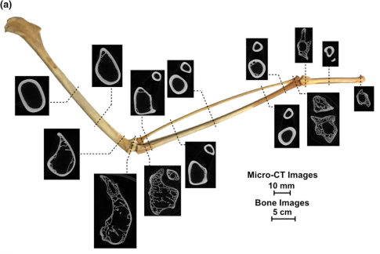

Resilient Walls
Lightweight & Load-Optimized Modular Brick Systems

In regions most vulnerable to climate change—particularly Small Island Developing States—the need for rapidly deployable, adaptable infrastructure is urgent. More than 60% of the population in Guyana, Tuvalu, and the Bahamas (approximately 10 million people) are exposed to 100-year flood hazards. (Archer et al.)
Traditional solutions like gabion walls are heavy, material-intensive, and difficult to transport and assemble quickly.
How might we create flood defense structures that are lightweight enough for rapid deployment, strong enough to withstand extreme conditions, and modular for adaptability and reuse?
Biological Inspiration
Bird Bones → Lightweight Strength
High internal porosity maintains strength while minimizing weight. This natural optimization informed our topology optimization approach for efficient material distribution. (Sullivan et al.)
Conch Shells → Fracture Resistance

Three-tiered lamellar structure deflects and dissipates cracks. This principle inspired our grain direction strategy for crack prevention. (Osuna-Mascaró et al.)
Process: Design

Grain Direction Strategy
We aligned internal grain patterns with stress lines from topology optimization and alternated grain patterns in adjacent bricks to deflect crack forces. This created a natural assembly logic based on stress orientation.

3D-Printing
Through iterative testing, we developed a fabrication process that supports grain direction. We reduced infill to 0% and achieved material differentiation through shell thickness variation only. Each brick was spatially oriented during printing to align with the intended grain direction, resulting in clear PLA prototypes at 1:20 scale with clean grain expression.
Final Prototypes

The backlit models show the varying infill densities inspired by the bird bone density optimization properties and the grain directions from spatial orientation during 3D printing inspired by the conch shell fracture deflection properties.
Future Development
Material Innovation
We're exploring bio-based filaments (wood-based, biocomposite) to reduce microplastic spread in water sources and enable end-of-life compostability. (Gehr) (Eastside Projects)

Advanced Joinery
Inspired by prismatic shell structures, we envision micro-textured friction-based connections that enhance load-bearing capacity without compromising assembly ease. (Ballarini et al.)
Low-Tech Alternatives
For regions without 3D printing access, we're investigating rammed earth fabrication that maintains grain direction principles while enabling community-based construction methods.
Structural Validation
Future work includes horizontal and lateral force testing for flood conditions, site-specific loading simulations, and validation across real-world environmental scenarios.
Scaling Challenges
Moving from prototype (1:20 scale) to full-scale bricks (15 x 15 x 30 cm) requires research into advanced manufacturing processes to maintain detail resolution and fabrication speed.